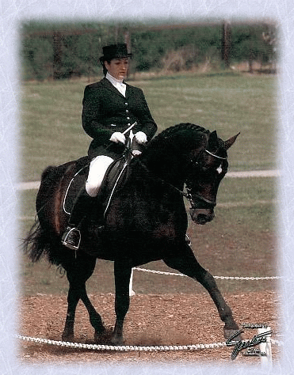

|  |
Wishes and Dreams is a 1993 dark bay Oldenburg stallion by the legendary Weltmeyer out of Phirst Solo. Wishes and Dreams successfully completed his 2001 show season this fall competing at Third Level. He placed first nationally for his Third Level Musical Freestyle with the AWR, Oldenburg NA, and received the Silver Stirrups Awards from the PHR as well. He also placed third nationally for Third Level with AWR, Oldenburg NA and the PHR. He is an extraordinarily potent stallion, stamping all of his offspring with striking movement, strong work ethic and his wonderful disposition. His offspring have proven to be very trainable and highly competitive. Here in the region six area, WD was undefeated in the in-hand Get of Sire classes for 2001. WhistleJacket, a three-year-old gelding by WD, was Reserve Champion for the Colts and Geldings at the Fort Vancouver Dressage Show and the Oregon Dressage Society Champion Three-Year-Old Colt/Gelding in 2001. Wirago, a two-year-old AWR mare by WD, was the year 2000 NWSHBA Horse of the Year Yearling Filly with a top score of 79.4% at the NW Warmblood Breeders show under judge Patricia Deptford. Wirago is undefeated in her age group Futurity classes, as well as the winner of both of the AWR in-hand classes that she participated in for 2001 with scores of 76.0% and 73.5%. |
|||||||||||||||||||||||||||||||||||||||||||||||||||||||
2001 Show Highlights
| ||||||||||||||||||||||||||||||||||||||||||||||||||||||||
|
LDF Farms ~ 32040 NE 112th St, Carnation, WA 98014 ~ 425-788-5814 ~ info@ldf-farms.com |
||||||||||||||||||||||||||||||||||||||||||||||||||||||||